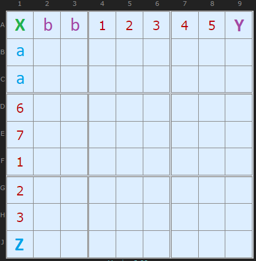
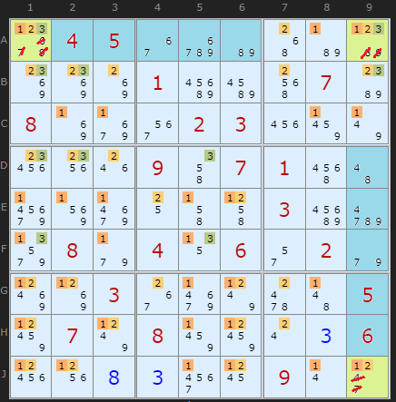
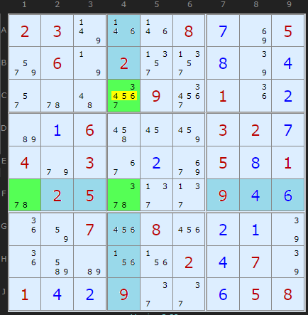
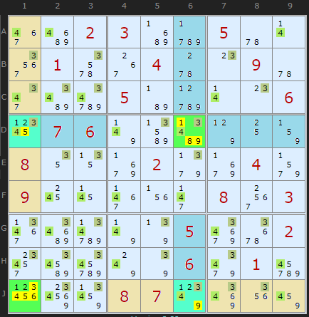

SudokuWiki.org
Strategies for Popular Number Puzzles
Fireworks
A super new pattern discovered by shye over at the New Sudoku Players Forum and posted in November 2021. The full write up is on this thread.

To quote shye it is "built around a very simple idea, that being when a candidate in an intersecting row and column is limited to the same box, it must be placed in the intersecting cell".
Take row A and column 1 and consider candidate 9. Clearly the cell marked with X would satisfy 9 for both the row and the column. Both the row and the column have one remaining cell outside box 1 - cells marked Y and Z. A 9 in Y would exclude X and necessitate another 9 in Z or maybe in the cells marked a. Same goes for 9 in Z.
The conclusion is that 9 must appear at least once in the three cells X, Y or Z.
Knowing one candidate fits in X, Y and Z at least once doesn't get us very far since "there is no common seen cell to eliminate a candidate" but the pattern - a 'firework' - can explode outwards from the intersection if multiple candidates share the intersection. In the diagram above candidate 8 also works on the same logic as 9.
That gives us an interesting weak link between 8 and 9 in X that obliges at least one of Y and Z to be 8 or 9. We could include this link in AICs and other chaining strategies.
That gives us an interesting weak link between 8 and 9 in X that obliges at least one of Y and Z to be 8 or 9. We could include this link in AICs and other chaining strategies.
Triple Firework

A1, A9 and J9 exhibit the firework pattern with candidates 1, 2 and 3. We know that each candidate must appear at least once in these three cells and we have three firework candidates so that makes a classic Locked Set. We can't be certain which cells will ultimately be 1, 2 or 3 (except 3 is already excluded from J9) but a locked set excludes other candidates, so we can remove them. This greatly simplifies the rest of the puzzle which would otherwise require laborious chains.
Note that 1, 2 and 3 are absent from the blue shaded cells. This is how to spot the pattern. Also note that like triples in other strategies, it is not required that {1,2,3} be present in both wing cells, merely that they are present across the three cells. The pattern does require {1,2,3} in the intersection cell.

This Triple runs off {3,7,8} from the intersection cell F4. I've marked the cells which lack these candidates in light blue to highlight how outside box 5 there is only one cell in each of row F and column 4 where {3,7,8} can fit. The eliminations are in yellow.
Triple Fireworks: The three cells [F1|F4|C4] are a locked set that must contain {3/7/8} therefore
4/5/6 removed from C4
Out of some 45,000 hard puzzles in one test set I found just over 300 examples, comparable to Naked Quads.
Quadruple Firework

Actually, this is two double fireworks that happen to align on four cells. Down in the bottom left corner on J1 we have two fireworks on candidates {1,2}. I've drawn the cells that don't contain 1 or 2 in light brown. The second double firework hangs on D6 and the candidates {3,4}. The wings of both these patterns are the same two cells: D1 and J6.
While we have exactly four numbers in four cells the eliminations are a little bit more complicated than the triple. The intersection cells eliminate everything that is not a firework candidate, so J1 will keep only {1,2} and D6 will keep only {3,4}. While D1 and J6 will keep all four candidates {1,2,3,4}, if not already removed.
This pattern is rare because it not only requires four fireworks, they must be aligned just so, too many coincidences. But the logic is enjoyable.
There are a good many novel uses of this pattern in more advanced ways that I don't need to duplicate here, the thread is clear. For this release of the solver I've included the two types above and will further document when or if I can code up more variants.
Fireworks Exemplars
These puzzles require Fireworks strategies at some point but are otherwise mostly basic strategies such as Pointing Pairs
They make good practice puzzles.
Discovered by Klaus Brenner
They make good practice puzzles.
Discovered by Klaus Brenner
Comments
Email addresses are never displayed, but they are required to confirm your comments. When you enter your name and email address, you'll be sent a link to confirm your comment. Line breaks and paragraphs are automatically converted - no need to use <p> or <br> tags.
... by: blortch1
Thank you for an explanation in advance.
... by: Maik
... by: David Harkness
I suspect the pattern holds for any candidate in the triple that isn't in the intersection as long as it only appears in one or both of the wing cells (Y and/or Z) and not in any of the other cells in the row/column being examined. If not, it won't be locked to XYZ.
If I find an example of such a case, I'll post again.
David
... by: JRTRCT
https://app.crackingthecryptic.com/sudoku/fpuzzlesN4IgzglgXgpiBcBOANCALhNAbO8QBUBXLCABxFQENC0ALAewCcEQAFCStT+ikR4mGBhoWAOSYBbSlgAEYQgBN6Aa0Iz+OMDMqlSWAJ4A6XgHNGEBQgDaV4AF9k9xw6egAbtMK4ALKhMQ3GAA7BDR+GBcQDywvBAA2PwDg0PCXNOcAXWRbdPdPXAAmRMCQ+DCvSOjY+ABmYuSy1Odm1yj8hAB2etLyiMzs1qrcAEZulIqW3Mr2+ABWMcaJ1zss2zaY3C6QfxLxvuXHderR7aSepoPLo58F3pWB64R5093F/anDoYQUF4a7yZaj3gCV+5wqq0GMwAHLcLkCfjs/hdckCiqC9iivrVYUt7jlAVjnoiwfsgTD0W8PpCNggTsSMf18XkacCce9PjMEWcGVcsWj6ZTJhCqdMWVsBf9mdUidzBZcVhk7EA=
... by: Anonymous
(Avoidable Rectangles and similar strategies are an exception [kinda], but even then they only ask if the candidate could've existed in the cells in question. That is why givens aren't considered there)
The pattern will still work even if certain candidates are missing from the intersection, like normal hidden triples. Speaking of hidden triples...
How I understand this pattern
Triple fireworks are just hidden triples, with the three cells in very different places however.
In a hidden triple, the three candidates must exist at least one in the three cells of the pattern. A firework is a way of establishing that statement.
However, there are other ways to establish that, like a simple strong link between two of the cells, or maybe a chain starting and ending with a strong link with the ends being the two wing cells.
Same goes for 4-fireworks, they're hidden quads.
Sudoku X Addendum
I see massive potential with Fireworks in Sudoku X. Diagonals can replace one or both row or column, and when there is a single firework in regular Sudoku there are no common peers so there are no useful eliminations, but in Sudoku X even a single firework can provide oppurtunities for eliminations because of the diagonals.
(Variants don't get much love by the community, even though they provide objectively more interesting solving techniques... Sad...)
... by: Steven
Since each candidate in {1,2,3} (by the original pattern at the top) must appear at least once in X, Y, and Z (in this case, A1, A9, and J9)... I don't think it's necessary, just like any other triple.
Of course, I don't see a way for 3 to be eliminated from the intersection cell without ruining the pattern, but it still counts
... by: jovi_al
Just want to add, the triple firework example was set by user Qinlux (the puzzle title being "Triple Laser"), and the quadruple firework example was created by myself (the puzzle title being "Cobra Roll")! This is something we've all been working on for many months, so it's very exciting to see a page on it here :)
... by: Anonymous
While using the solver on this puzzle I discovered that there was a new addition to the solver, and a very exciting one. This pattern is very clever.
I'd also like to propose a strategy for Sudoku X: Since 9 is locked to A1, A9 and J1, if the puzzle were a Sudoku X, 9 can be eliminated from E5 and J9.
Also, creative name.